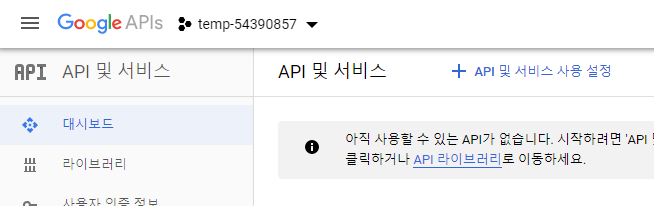
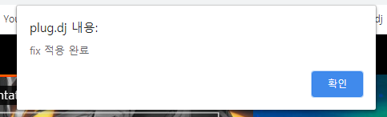

Google Developers Console(링크)에 접속하여 구글 아이디로 로그인합니다.
API 키를 발급받아야 하므로, 약관에 동의한 후 [동의 및 계속하기]를 클릭합니다.
1~10단계까지는 유튜브 API 키 발급 방법을 다루고 있으니, 이미 API 키를 보유중이라면 10단계부터 진행하시면 됩니다.
본 픽스는 PC용 구글 크롬 브라우저에서만 테스트하였으니 그 외 브라우저를 사용중이라면 (근처 컴잘알에게 문의하여) 적절히 수정해서 사용하세요.
본 픽스는 PC용 구글 크롬 브라우저에서만 테스트하였으니 그 외 브라우저를 사용중이라면 (근처 컴잘알에게 문의하여) 적절히 수정해서 사용하세요.
1 / 12
2 / 12
처음 Developers Console에 로그인하면 프로젝트를 생성해야 합니다.
[프로젝트 만들기]를 클릭해주세요.
[프로젝트 만들기]를 클릭해주세요.
3 / 12
프로젝트 이름이 크게 중요하진 않으니, 대충 입력하고 프로젝트를 만들어주세요.
4 / 12

프로젝트가 생성되고 나면 유튜브 데이터 API를 활성화시켜야합니다.
[API 및 서비스 사용 설정]을 클릭해주세요.
[API 및 서비스 사용 설정]을 클릭해주세요.
5 / 12
API 목록이 나오면 "YouTube Data API v3"을 찾아 클릭해주세요.
6 / 12

API 활성화를 위해 [사용 설정]을 클릭하세요.
7 / 12
API가 활성화되었으면 API 키를 발급받아야합니다.
[사용자 인증 정보 만들기]를 클릭해주세요.
[사용자 인증 정보 만들기]를 클릭해주세요.
8 / 12
뭔가 선택하라고 나오는데, 무시하고 [API 키] 링크를 클릭해주세요.
9 / 12
API 키 이름을 대충 입력하고(기본값을 사용해도 무방), [생성] 버튼을 클릭해주세요.
10 / 12
생성된 API 키를 아래 빈칸에 입력해주세요. (참고 : API 키 우측의 아이콘을 클릭하면 복사됩니다.)
11 / 12
북마크 바(On/Off 단축키: Ctrl+Shift+B)를 열고, 아래 링크를 드래그하여 북마크 바에 끌어다 놓습니다.
플디픽스
플디픽스
12 / 12

끝!
원하는 plug.dj 음악 감상 페이지에 접속한 후, 추가한 플디픽스 북마크를 클릭하면 픽스가 적용되었음을 알리는 창이 나타납니다.픽스가 적용되었다면 유튜브 검색이 정상 작동하는지 확인해보세요. (참고 : 페이지를 새로고침하면 픽스도 다시 적용해야합니다.)